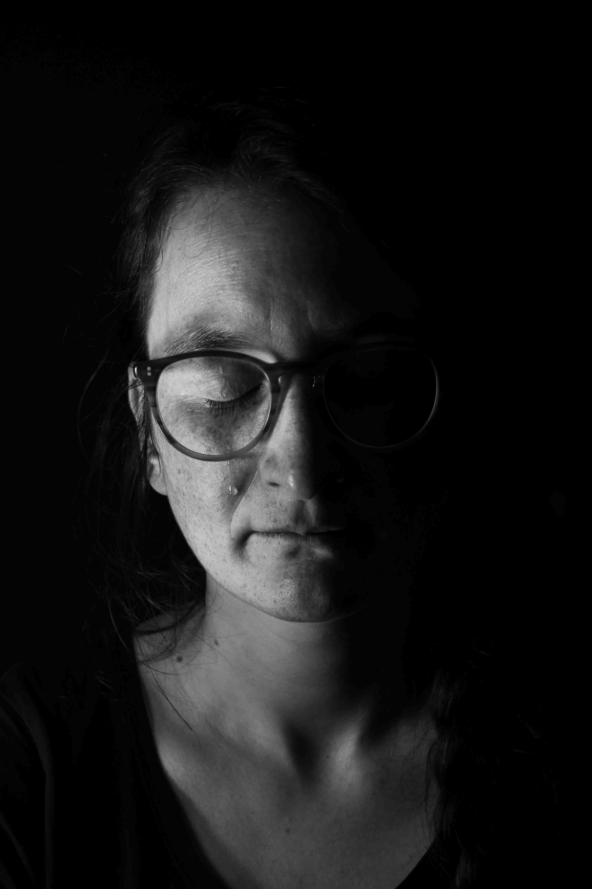
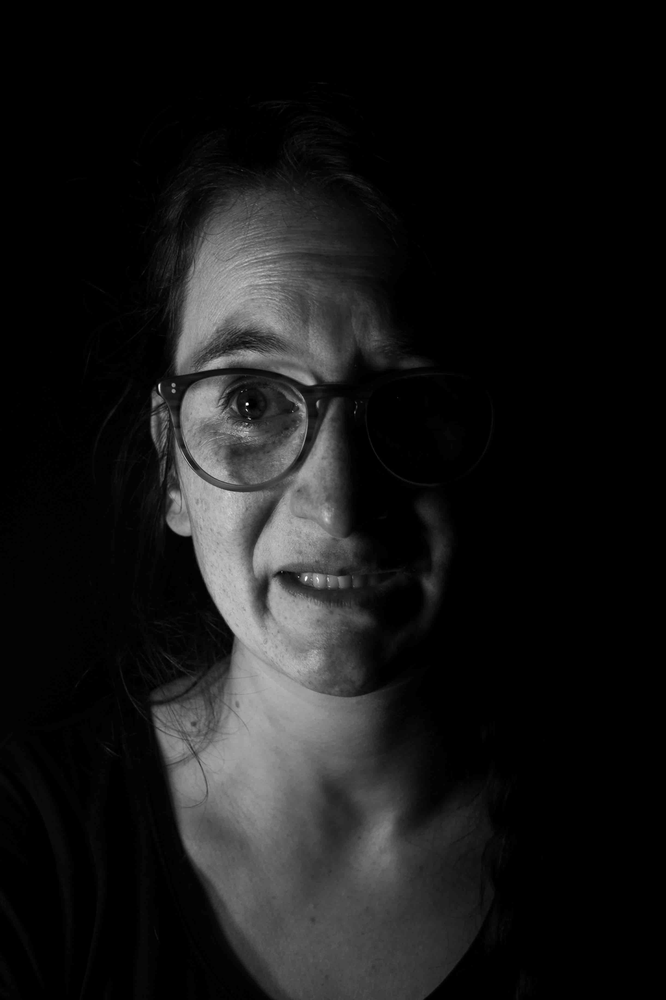

Listen to this page:
Claudia researches the politics and practicalities of how economies across the world can be made more sustainable as they transition away from fossil fuels.
"Sad"

Her sadness is clear from the outset: “It’s not that we don’t know what to do. We don’t have the exact solutions for every part, but we know the bigger part. It’s just not happening”. “The sadness comes in waves”, she says through tears, “Being focused on one thing can help to keep it aside, but only temporarily. I feel I can’t live my life – why should we even consider not having kids? We’re not fully free – I envy people who don’t know as much as I do…”
"Disgusted"

She tells me she is disgusted by the greed and hypocrisy in the system: “The greenwashing disgusts me – so much smart thinking is used to get around policies and recommendations. Why can’t we use that intelligence to make the world better?”
"Determined"

“I have this determination to continue to improve”, she explains, “Doing my research, trying to live better – little by little. It’s just overwhelming to try to do it all at the same time.”
“I do feel hope”, she says, “But the kind of ambition level we need… that is like grieving for me. We’re losing hope for 1.5 degrees – even 2 seems more challenging. The hope is that we achieve the least bad of the possible alternatives.”

Visit the project website